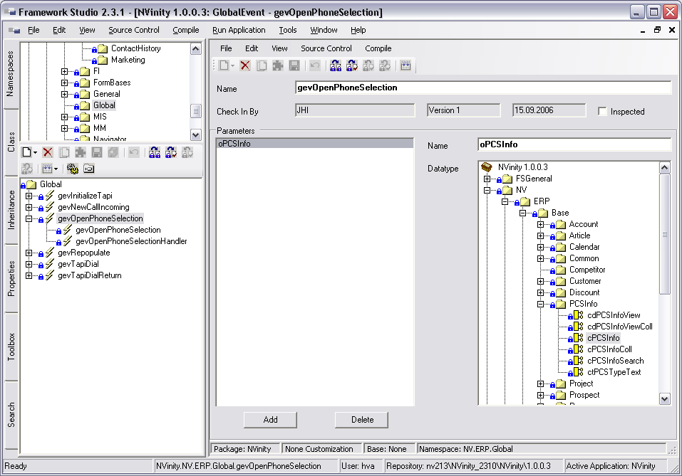

Global Events
Global Events sind dazu da, Events zu feuern, die in der ganzen Anwendung abgefangen werden können. Sie können z.B. dazu dienen, allen offenen Workflows und Forms mitzuteilen, dass sie ihre Daten aktualisieren sollen, weil sich Stammdaten geändert haben.
Ein Global Event besteht aus zwei Teilen: einem Sender. einem Event-Handler.
Die Global Events können zudem auch eine beliebige Anzahl von Parametern jedes Typs erhalten. Somit können mit dem Event auch Daten an jede Stelle der Anwendung übertragen werden.

Global Events sind durch das  -Icon gekennzeichnet.
-Icon gekennzeichnet.
Global Events anlegen / löschen
Ein neues Global Event legen Sie an, indem Sie den Namespace markieren, unter dem das neue Event angelegt werden soll. Anschließend drücken Sie den Button (New) und wählen den Eintrag Global Event aus. Das Global Event wird angelegt und geöffnet.
Ein Global Event kann in jedem beliebigen Namespace angelegt werden. Es ist aber empfehlenswert, die Events alle in einen Namespace zu packen.
Löschen können Sie ein Global Event, indem Sie das Event in der Namespaces-Registerkarte markieren und den Button (Delete) drücken. Das Löschen wird erst mit dem Button (Save All) wirksam.
Global Events bearbeiten
Sie öffnen ein Global Event, indem Sie einen Doppelklick auf das Event der Namespaces-Registerkarte machen. Es öffnet sich der GlobalEvent-Designer im rechten Teil des Framework Designers.
Name
Gibt den Namen des Global Events an.
Parameters
In diesem Teil des Fensters werden die Parameter des Global Events verwaltet. Ein Global Event kann beliebig viele Parameter der unterschiedlichsten Datentypen besitzen.
In der Listbox werden alle Parameter mit ihrem Namen aufgelistet. Rechts daneben werden die Eigenschaften des ausgewählten Parameters bearbeitet.
Parameters Name
Name des Parameters.
Parameters Datatype
Gibt den Datentyp des Parameters an. Zur Auswahl stehen .NET-Datentypen, FS-Datentypen, Metadatentypen und Components.
Button Add
Fügt einen neuen Parameter in die Liste ein.
Button Delete
Löscht den momentan markierten Parameter aus der Liste.
Global Events verwenden
Global Events können im Workflow verwendet werden. Nähere Informationen dazu finden Sie im Kapitel Workflows. (Global Events)